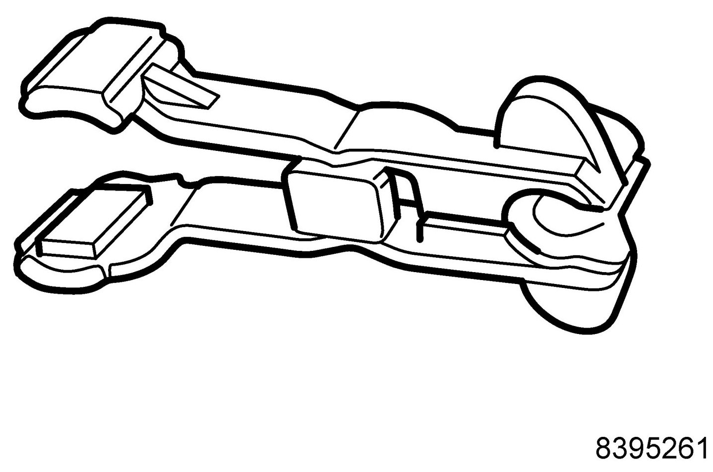
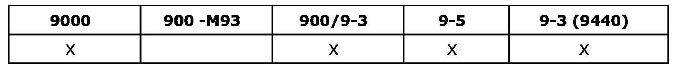

Operation CHARM
: Car repair manuals for everyone.
Home
>>
Saab
>>
2011
>>
9-3 FWD (9440) L4-2.0L Turbo
>>
Repair and Diagnosis
>>
Powertrain Management
>>
Fuel Delivery and Air Induction
>>
Tools and Equipment
>>
83 95 261 Fuel Line Tool
83 95 261 Fuel Line Tool
83 95 261 Fuel Line Tool

For parting the fuel line and tank ventilation
Group: Engine
